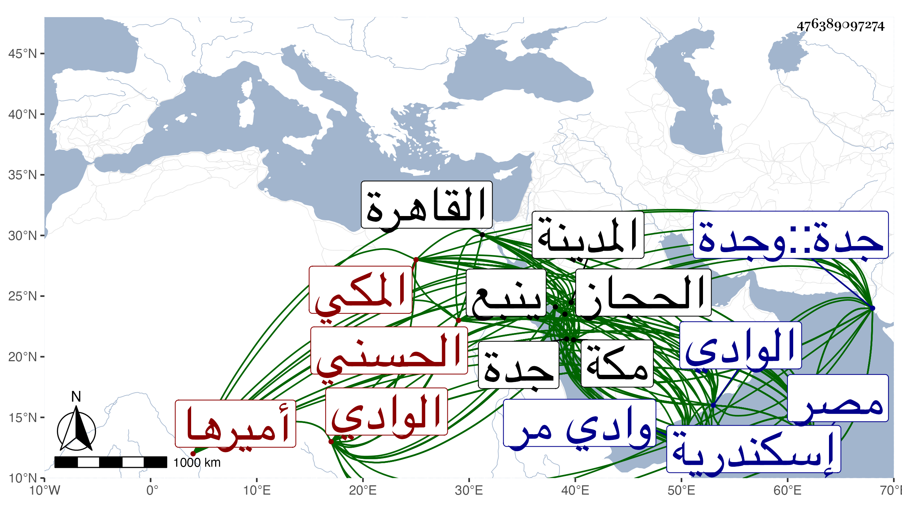

0902Sakhawi.DawLamic.ITO20230111-ara1.EIS1600.476389097274
Biography ID: 476389097274
464
عنان بن مغامس بن رميثة بن أبي نمي الزين أبو لجام الحسني المكي أميرها ، ولد بها في سنة اثنتين وأربعين وسبعمائة ولما قتل أبوه رباه عمه سند بن رميثة فلما مات استولى على خيله وسلاحه وأثاثه فرام عمه عجلان انتزاعه منه لكونه الوارث لسند ففر عنان ثم أرسل يؤمنه فعاد إليه فأكرمه وبالغ عنان في خدمته حتى كان عجلان يقول هنيئا لمن ولد له مثله ، ثم تزوج بابنة ابن عمه أم مسعود واختص بوالدها أحمد بن عجلان ثم تنكر له أحمد فذهب عنه عنان إلى صاحب حلي ثم توجه هو وحسن بن ثقبة إلى مصر وبالغافي الشكوى من أحمد واتفق كون كبيش بن عجلان بمصر فساس الأمر إلى أن رجع عنان ومعه مراسيم السلطان بإعطائه لحسن وعنان ما التمساه فلم يوافق أحمد بن عجلان على ذلك ففرا منه فردهما أبو بكر بن سنقر أمير الحاج فلما عادا ورجع أبو بكر بالحاج قبض عليهما أحمد بن عجلان وعلى أخيه محمد وأحمد بن ثقبة وابنه علي وسجن الخمسة ففر عنان إلى مصر وذلك في سنة ثمان وثمانين وجرت له في هربه خطوب فاتفق موت أحمد بن عجلان وولاية ابنه محمد فبادر إلى كحل المسجونين فبلغ ذلك الظاهر فغضب وأرسل إلى محمد بن أحمد بن عجلان من فتك به لما دخل الحاج مكة واستقر عنان أميرها ودخلها مع أقباي المارداني أمير الحاج ووقع الحرب بينه وبين بني عجلان فهزمهم فلما رجع الحاج تجمع كبيش بن عجلان ومن معه وكسبوا جدة ونهبوا أموال التجار فلم يقاومهم عنان واحتاج إلى تحصيل مال أخذه من المقيمين بمكة من التجار وغيرهم ليرضى به من معه وأشرك معه في الإمرة أحمد بن ثقبة وعقيل بن مبارك ودعا لهما معه ثم أشرك معهم علي بن مبارك فتفرق الأمر وكثر الفساد فبلغ السلطان ذلك فأمر علي بن عجلان على مكة فقابله عنان خارجها في رمضان سنة تسع وثمانين فقتل في المعركة كبيش وجماعة وانهزم علي ومن معه إلى الوادي فلما قدم الحاج فر عنان إلى نخله وقام علي بن عجلان بأمرة مكة فلما رجع الحاج غار عنان على وادي مر وجدة وكاتب السلطان فكتب بإشراك علي بن عجلان معه في الإمرة فلم يتم ذلك وقدم مصر سنة تسعين فلم يقبل عليه السلطان ، وسجن في أيام تغلب منطاش فلما عاد الظاهر إلى المملكة أعاده إلى الإمرة شريكا لعلي فسار إلى ينبع فحاربه أميرها وبير بن نخبار فظهر عليهم ونزل الوادي في شعبان سنة اثنتين وتسعين ثم أدخل مكة ودعي له إلى رابع صفر سنة أربع وتسعين ثم وثبوا عليه ليقتلوه وهو في الطواف ففر ، وفي غضون ذلك فسدت الطرقات بالحجاز فأرسل السلطان فأحضر عنانا وعليا فدخلا مصر في جمادى الآخرة فأفرد عليا بالإمرة وأمر الآخر بالإقامة في مصر ورتب له ما يقوم به ثم سجن بالقلعة في سنة خمس وتسعين ثم نقل في أواخر سنة تسع وتسعين إلى إسكندرية هو وجماز بن هبة أمير المدينة ومعهما علي بن مبارك بن ثقبة ، ثم أعيد عنان إلى القاهرة في آخر سنة أربع وثمانمائة فمرض بها ، ومات في يوم الجمعة مستهل ربيع الأول سنة خمس وله ثلاث وستون سنة ، وكان شجاعا كريما ذا نظم لكنه كان قليل الحظ في الإمارة وافره في الخلاص من المهالك إلى أن حضر أجله . ذكره شيخنا في إنبائه ، وطول الفاسي ترجمته ثم المقريزي في عقوده .
